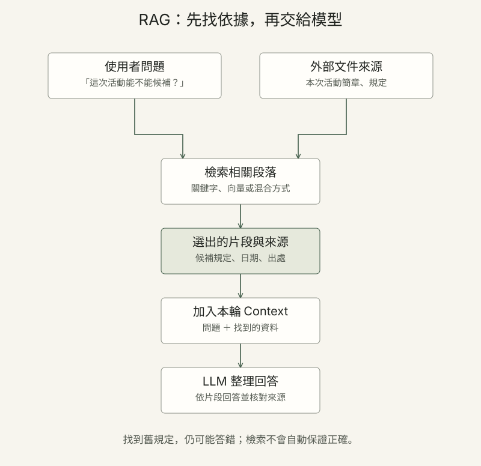

向量、檢索與微調：各自在做什麼？
同樣是讓模型更有幫助，這些方法處理的是不同環節：先表示資料、尋找相關內容，或調整模型的行為。
- Embedding
向量表示 - 把文字等內容轉成數字向量，讓系統依表示方式比較內容。例：為活動簡章建立向量，協助找出與問題相關的段落。
- RAG
檢索增強生成 - 先從外部資料找出相關內容，再提供給模型回答。例：回答報名規定前，先檢索當次活動簡章。看 RAG 的三步流程 →
- Fine-tuning
微調 - 用特定資料繼續訓練既有模型，調整模型參數或可訓練的適配部分。例：用標註範例訓練模型依固定格式分類。
- LoRA
低秩適配 - 一種參數效率較高的微調方法，通常凍結原有權重，訓練較小的新增參數。例：為特定任務訓練一組可搭配基礎模型的適配參數。
- Pre-training
預訓練 - 在大量資料上訓練基礎模型的參數。例：先學到語言形式與一般模式，再視需要進行後續調整。
- Distillation
知識蒸餾 - 以教師模型的輸出或其他訊號訓練學生模型，是模型訓練方法；資料使用仍要符合授權。例：用教師示範協助訓練較小的學生模型。
怎麼區分？RAG 在回答時提供找到的資料；微調透過訓練改變模型的表現。兩者可以搭配，也都不能取代來源核對。
參考：RAG 原始研究、Hugging Face：LoRA。
向量相似度與檢索
搜尋系統可以將問題與文件轉為向量，再用餘弦相似度等方法找出可能相關的內容；也可以使用關鍵字或混合檢索。向量相近只是某種表示下的相似，不保證內容正確或適合回答問題。
Unsloth 是協助模型訓練、微調與匯出的工具；速度和記憶體需求會依模型、資料與硬體而變，不能套用固定倍數。查看原教材微調與 Unsloth 說明 →
RAG：先查資料，再把資料交給模型
例如學生問「這次活動能不能候補？」系統先找出本次簡章的候補規定，把相關段落放進 Context，再請模型整理回答。

- 找出相關資料查本次活動簡章
- 帶入 Context附上片段與來源
- 生成並核對回答是否符合原文？
如果找到的是去年的規定，回答仍然可能錯。RAG 增加的是可用依據，不會自動保證答案正確，也不等於重新訓練模型。
深入：文件要怎麼準備，才能找得到？
切片與索引
系統可以先把長文件分成片段，保留標題、日期等資訊，再建立方便查找的索引。片段切得太小可能失去上下文，太大也可能帶入無關內容，需要依資料和問題調整。
關鍵字、向量與混合檢索
關鍵字檢索找相符的字詞；向量檢索比較內容的數字表示；混合檢索把兩種線索結合。系統也可能先找出候選片段，再重新排序。RAG 不限定只能使用向量資料庫。